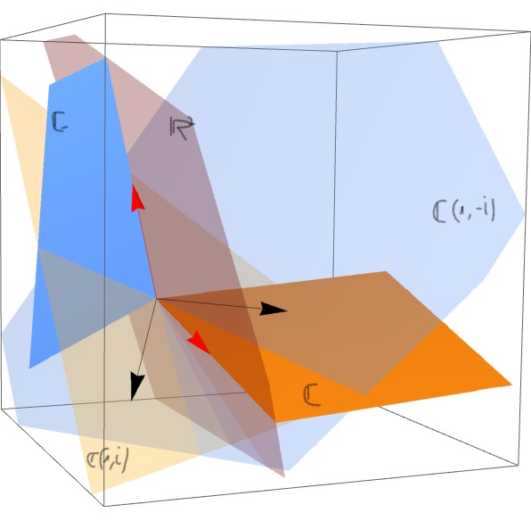

Complexification of a vector space
Sea $V$ un espacio vectorial real, y $J: V \rightarrow V$ un $\mathbb{R}$-isomorfismo tal que $J^2=-Id$. Entonces $J$ es llamada una complex structure en $V$. Cuando en un espacio vectorial real tenemos una tal estructura definida, podemos ver ese conjunto $V$ como un espacio vectorial complejo de la siguiente manera:
$$(\alpha+i\beta)\cdot v=\alpha v+\beta J(v)$$
Es fácil comprobar que con esta operacion $V$ es un $\mathbb{C}$-espacio vectorial. We will denote it by $V_J$.
Recíprocamente, si $V$ es un espacio vectorial complejo, se puede considerar como un espacio vectorial real restringiendo los escalares. Y ademas, el automorfismo consistente en multiplicar por $i$ es una estructura compleja.
En particular, consideremos $\mathbb{C}^n$. Si lo identificamos con el $\mathbb{R}$-espacio vectorial $\mathbb{R}^{2n}$, la multiplicación por $i$ induce la estructura compleja
$$J(x_1,y_1,x_2,y_2,\cdots)=(-y_1,x_1,-y_2,x_2,\cdots)$$
cuya matriz en la base canónica es
$$ M= \left( \begin{array}{ccccc} 0 & -1&0&0&\cdots\\ 1 & 0 &0&0&\cdots\\ 0 & 0&0&-1&\cdots\\ 0 & 0&1&0&\cdots\\ \cdots & \cdots &\cdots&\cdots&\cdots\\ \end{array} \right) $$ con bloques $$\left(\begin{array}{cc}0 & -1\\ 1 & 0 \\ \end{array} \right)$$ en la diagonal.El automorfismo $J$ recibe el nombre de estructura compleja estándar, y es única en el siguiente sentido:
Lema
Dada cualquier estructura compleja $J_1$ de $\mathbb{R}^{2n}$, existe una matriz regular $A$ tal que $M_1=A\cdot M \cdot A^{-1}$, donde estamos denotando por $M$ y $M_1$ a las matrices de los morfismos $J$ y $J_1$ en la base canónica de $\mathbb{R}^{2n}$.
Proof
Llamemos $C_1^n$ al espacio vectorial complejo originado por $\mathbb{R}^{2n}$ junto con la estructura compleja $J_1$, y sea $\{f_1,f_2,\cdots\}$ una base de dicho $\mathbb{C}$-espacio vectorial. Entonces $$\{f_1,J_1(f_1),f_2,J_1(f_2),\cdots\}$$ es también base de $\mathbb{R}^{2n}$, con la particularidad de que en dicha base la matriz de $J_1$ es
$$ \left( \begin{array}{ccccc} 0 & -1&0&0&\cdots\\ 1 & 0 &0&0&\cdots\\ 0 & 0&0&-1&\cdots\\ 0 & 0&1&0&\cdots\\ \cdots & \cdots &\cdots&\cdots&\cdots\\ \end{array} \right) $$Si $A$ es la matriz del cambio de base se tiene que
$$M_1=A\cdot M \cdot A^{-1}.$$
- $\blacksquare$
Así pues, el espacio cociente $\frac{GL(2n,\mathbb{R})}{GL(n,\mathbb{C})}$ determina todas las estructuras complejas de $\mathbb{R}^{2n}$ mediante la aplicación $[A]\rightarrow A\cdot M \cdot A^{-1}$.
Para comprobarlo primero necesitaremos el siguiente
Lema
Sea $V$ un espacio vectorial real con una estructura compleja $J$, y $h$ una aplicación $\mathbb{R}$-lineal de $V$ en si mismo. El endomorfismo $h$ es $\mathbb{C}$-lineal si y sólo si $h(Jv)=Jh(v)$.
Proof
Trivial. $\blacksquare$
Así pues, consideremos en $\frac{GL(2n,\mathbb{R})}{GL(n,\mathbb{C})}$ las clases $[A]=[B]$, entonces las matrices $AMA^{-1}$ y $BMB^{-1}$ son iguales, pues $AB^{-1} \in GL(n,\mathbb{C})$ y por tanto conmuta con $M$, luego
$$AMA^{-1}=AM(A^{-1}B)(B^{-1}A)A^{-1}=$$
$$ =A(A^{-1}B)M(B^{-1}A)A^{-1}=BMB^{-1}. $$Definition
Given a real vector space $V$, we call the complexification of $V$, and denote it by $V^{\mathbb{C}}$, to the set $V\oplus V$ with the complex structure given by
$$ J : V \oplus V \rightarrow V \oplus V $$such that $J(v, w)=(-w, v)$. Obviously, $V^{\mathbb{C}}$ can be treated like a complex vector space.This can be constructed, alternatively, using tensor product. See the document in Calibre Complexification, complex structures, inner products, symplectic forms and linear differential equations'' for a good outline of this subject.
Complex eigenvalues of real matrices mean rotations
The real vector space $\mathbb{R}^2$ can be seen as $\mathbb{C}$ in several ways: it depends on what we set as the $i$ (fixed a complex structure $J$, $i$ is identified with $J((1,0)^t)$ and reciprocally, $J$ is determined by the choice of the analogous of $i$). When you have an $\mathbb{R}$-linear operator $A$ in $\mathbb{R}^2$ with complex eigenvalues (that must be conjugate of each other) you can look for the appropiate way of see $\mathbb{R}^2$ as $\mathbb{C}$ in such a manner that $A$ becomes like multiplying by a complex number. Which one? The eigenvalue!! (one of them to your choice). Formally:
Lema
\label{complexeigenvalues}
Let $A$ be a $\mathbb{R}$-linear operator in $\mathbb{R}^2$. If $A$ has two conjugate complex eigenvalues $\lambda$ and $\overline{\lambda}$, then we can find a complex structure in $\mathbb{R}^2$ in such a way that $A$ is like multiplication by $\lambda$ in $\mathbb{C}=\mathbb{R}^2$.
Proof
The complex structure must be a $J$ such that $A=aI+bJ$, where $a+ib$ is an eigenvalue of $A$ with by hypothesis $b\neq 0$. To see that $J^2=-I$ we use the complexification of $\mathbb{R}^2$:
$$ J^{\mathbb{C}}: (\mathbb{R}^2)^{\mathbb{C}} \mapsto (\mathbb{R}^2)^{\mathbb{C}} $$The key is that the map
$$ A^{\mathbb{C}}: (\mathbb{R}^2)^{\mathbb{C}} \mapsto (\mathbb{R}^2)^{\mathbb{C}} $$has the same eigenvalues AND EIGENVECTORS (while $A$ doesn't have the latter ones). Moreover, we can find a basis of eigenvalues in $(\mathbb{R}^2)^{\mathbb{C}} $, say $\{v_1, v_2\}$.Any $w\in(\mathbb{R}^2)^{\mathbb{C}}$ satisfy $w=xv_1+yv_2$. Observe that
$$ A^{\mathbb{C}}(xv_1+yv_2)=x(a+ib)v_1+y(a-ib)v_2 $$so $$ J^{\mathbb{C}}(w)=\frac{1}{b}[A^{\mathbb{C}}-aI^{\mathbb{C}}](w)=\ldots=xiv_1-yiv_2 $$and since
$$ A^{\mathbb{C}}(xiv_1-yiv_2)=\ldots=xiav_1-xbv_1-yaiv_2-ybv_2 $$we get
$$ J^{\mathbb{C}}(J^{\mathbb{C}}(w))=J^{\mathbb{C}}(w)(xiv_1-yiv_2)=\ldots=-w=-I^{\mathbb{C}}(w) $$And since $A^{\mathbb{C}}=B^{\mathbb{C}}$ implies $A=B$, we obtain
$$ J^2=-I $$Therefore, $J$ is a complex structure and
$$A:\mathbb{R}^2_J\mapsto \mathbb{R}^2_J$$
is such that
$$ A(v)=(a+ib)v $$$\blacksquare$
Visually:
- 
Assume the eigenvalues have module one. In the picture above we see in red the real vector space $\mathbb{R}^2$, with the usual base $e_1, e_2$ in red. If we take the complexified $(\mathbb{R}^2)^{\mathbb{C}}$ we extend $e_1$ and $e_2$ not as a line, but each one as a plane $\mathbb{C}$ (the solid orange plane and the blue one). The whole system is a four dimensional real space (two dimensional complex space). The map $A$ has eigenvectors $v_1$ and $v_2$ (the black ones in the picture). When we apply $A$ this eigenvectors rotate inside their complex line $\mathbb{C} v_1$ y $\mathbb{C} v_2$ (the yellow and the blue transparent planes in the picture). This rotations (one of angle $\theta$ and other of $-\theta$ since they are conjugates eigenvalues) compensate'' each other in such a way that they produce a rotation in the original real plane $\mathbb{R}^2$ (the transparent red one).
This rotation of the original plane induces a complex structure in $\mathbb{R}^2$ which is, in some sense, _transversal_: the red transparent plane is not a complex line, so it has no natural complex structure...
Complexification and conjugation
Given a vector space $V$ and its complexificated $V^{\mathbb{C}}$, we have a map $C$ (conjugation) that is involutive, $C^2=Id$, and such that the subspace of $V^{\mathbb{C}}$ sucht that
$$ C(v)=v $$is just the proper $V$. But, given any other map like $C$, say $D$, the subspace such that
$$ D(v)=v $$is a real vector space, call it $W$, such that $V^{\mathbb{C}}=W^{\mathbb{C}}$. See
\begin{verbatim}
\end{verbatim}
and TRTR page 414.

________________________________________
________________________________________
________________________________________
Author of the notes: Antonio J. Pan-Collantes
INDEX: